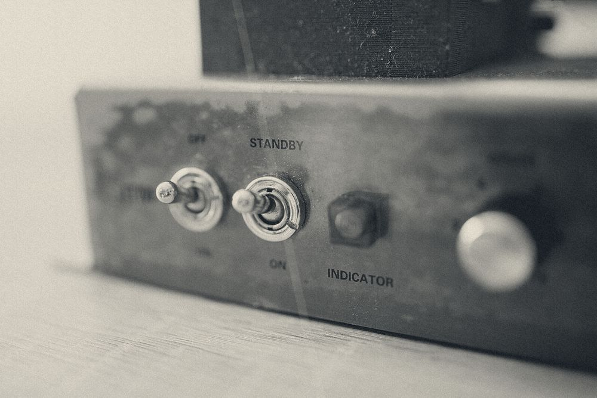
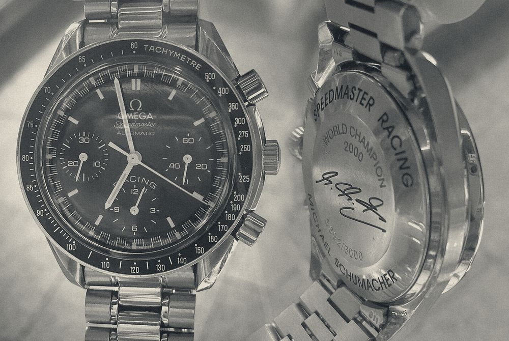
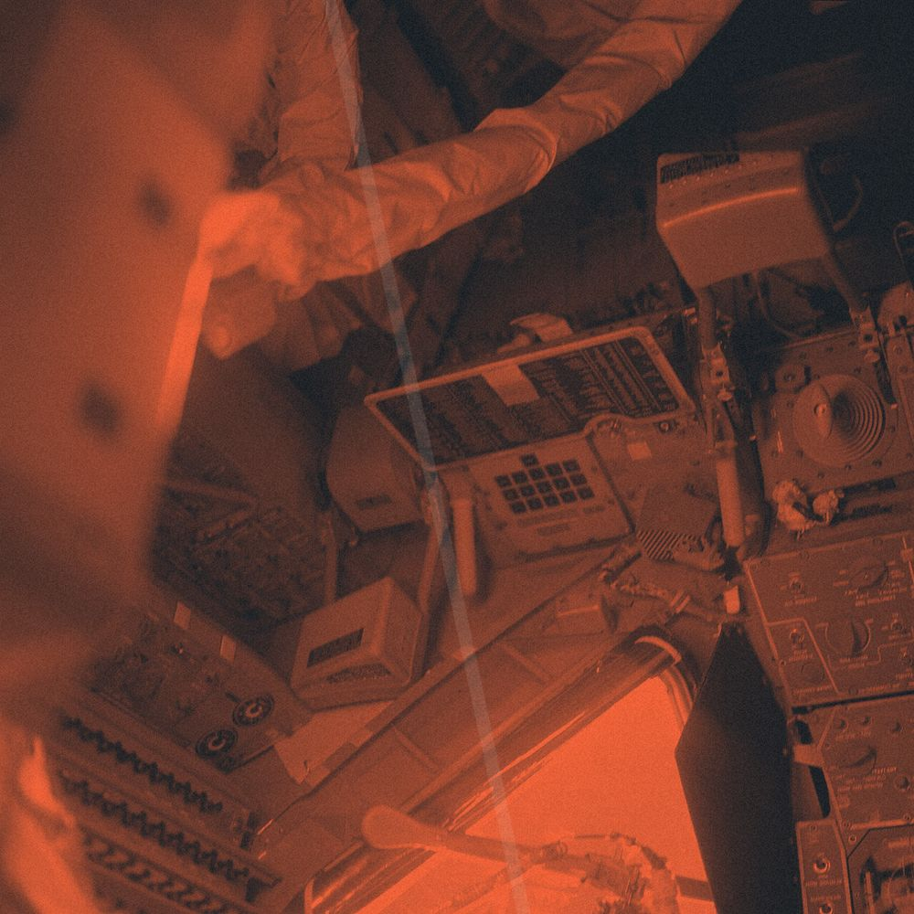
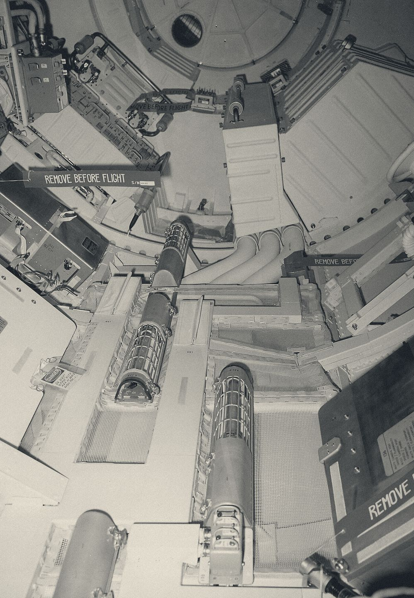
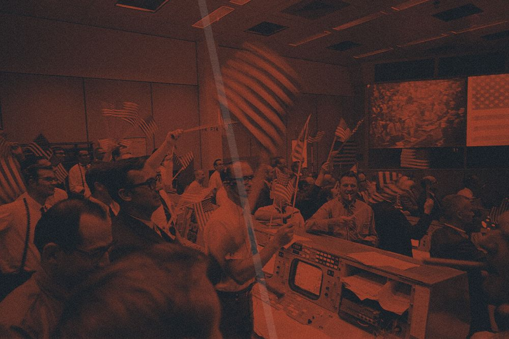
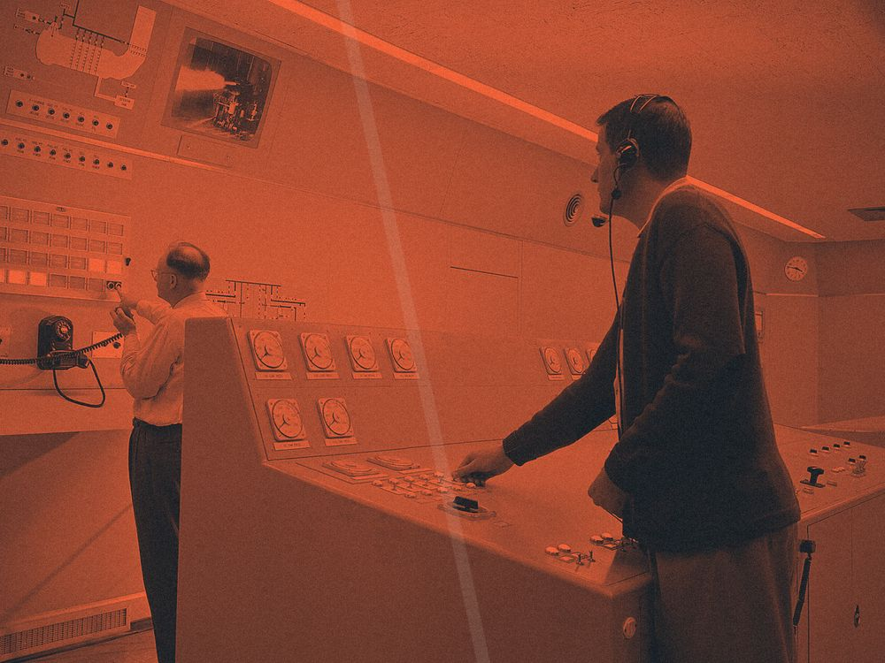
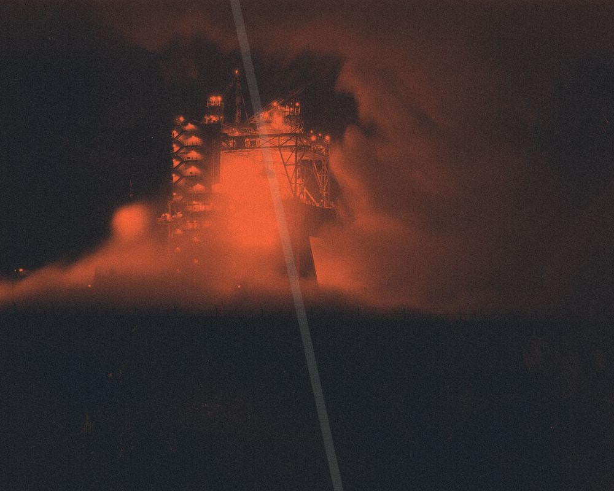
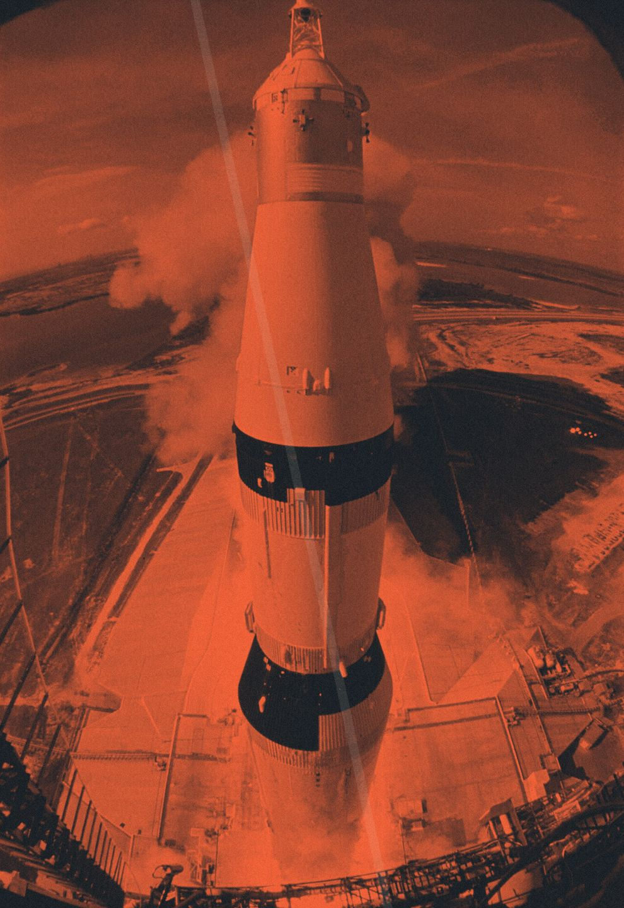
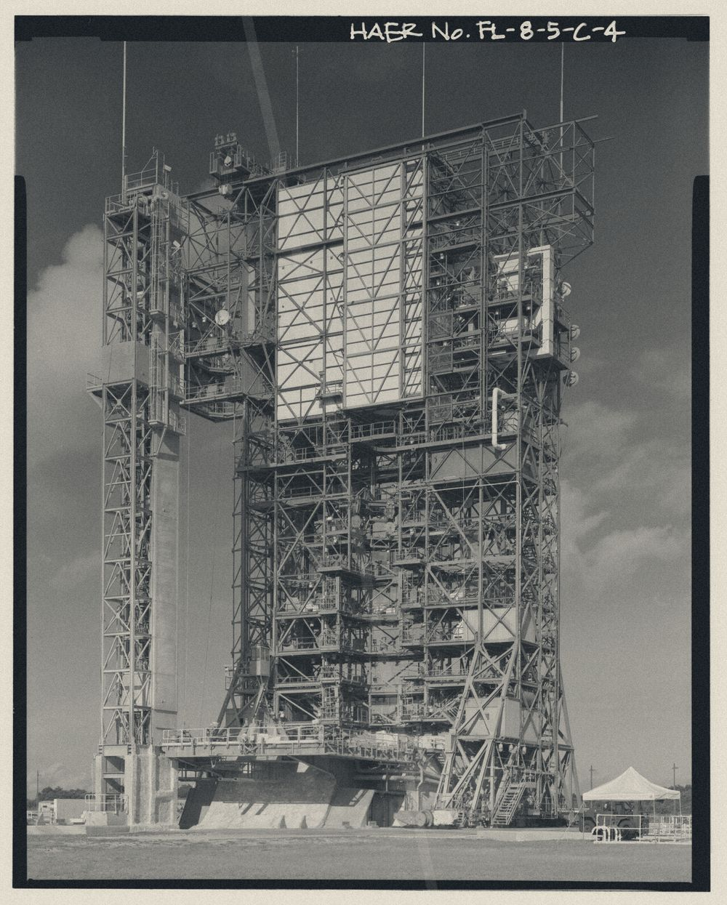

A-1107r120
推进剂加注
偏二甲肼与四氧化二氮两条管线同时接入，加注速率不超过每分钟 240 升，贮箱液位到位后自动切换补压。
质心 X-634 / Y-850
任务段 3 / 7 漂移相位 17.4s / 24s
状态 ZEROG-07 质心同步超时

每枚标贴的位置由到质心的距离 r 与方位角 θ 决定，r 按内容质量分 24 / 40 / 72 / 120px 四档，θ 间隔非均匀：最小 26°、最大 61°。质心偏离视口几何中心 6%（1440px 档即左移 86px），并以 48px 半径、24s 周期持续漂移；十一枚标贴作为整体平移，谁都不绕自己的轴转。

质心 634 / 850 基准板A-1107r120
偏二甲肼与四氧化二氮两条管线同时接入，加注速率不超过每分钟 240 升，贮箱液位到位后自动切换补压。
A-1108r40
用氦气把贮箱压力提到 0.32 MPa，保持 90 秒不掉压，才允许进入下一步。
A-1109r72
平台加温到 42℃ 后通电，漂移率连续三分钟低于 0.02 度每小时。
A-1110r120
S 波段与 C 波段各锁一次，误码率低于十的负六次方，帧同步保持 120 秒。
A-1111r40
四只锁钩逐一脱开，脱开后行程开关点亮，任一只未到位就退回锁定位。
A-1112r72
八台推力器各点三次，脉宽 40 毫秒，看推力室温度回升曲线是否重合。
A-1113r24
舱压从 101 kPa 降到 70 kPa，检漏 8 分钟，压降不超过 0.4 kPa。
A-1114r24
两组电池轮流恒流充到 28.5 V，单体压差压到 15 mV 以内。
A-1115r40
配重块按 8 档滑轨移动，把质心横向偏心压到 6 毫米以内，读数走远端质心寄存器。
A-1116r72
分离信号提前 1.2 秒给出，气路先断、电路后断；顺序反了就是一次中止。
A-1117r24
液氧流过冷却夹套 240 秒，出口温度低于 90 K 才允许点火。
读数口径：r 是内容质量档（标贴宽 212–330px，四档对应 24 / 40 / 72 / 120），θ 是该标贴相对质心的方位角，ρ 是换算到 450×700 参考椭圆后的实际距离。橙底 #E4572E 上只排深色墨 #111111（5.13:1），未涂布铝面 #D8D2C4 上排舱内暗蓝黑 #12181D（11.7:1），压痕暗侧 #8A3320 上排铝面银白（5.41:1）。
质心同步超时（错误码 ZEROG-07）：标贴停在上一帧位置，编号与最近邻列表仍可读，02:14 UTC 下行窗口后自动重同步。
上一帧冻结在质心 X-634 / Y-850、漂移相位 17.4s / 24s；已落位 11 / 11 枚，任务段停在 3 / 7 段（链路段），等待第 4 个数据包。
遥测链路上还没有第 4 个数据包。下一次下行窗口是 02:14 UTC。
八张图版取自公开档案扫描件，全部走双色调压印并叠 12° 高光带，铝箔反光处再叠 8% 平铺颗粒；不做柔光，不做镜头光晕。每张标出原始文件与权利状态，便于逐张比对舱内标贴与检查单的版式。








站位 = 质心 + (r·cosθ, r·sinθ)。下表按四位航电编号排序，编号顺序就是阅读与 Tab 顺序；θ 间隔非均匀，大间隔留给上下两端，因为椭圆在上下两端的切向是水平的，要躲开 300px 以上的标贴宽度。
| 编号 | 任务段 | 标贴标题 | 质量档 r | 方位角 θ | 距质心 ρ | 落位 |
|---|---|---|---|---|---|---|
A-1107 | 1 推进 | 推进剂加注 | r120 | 84° | 450.0px | 已落位 |
A-1108 | 1 推进 | 贮箱增压 | r40 | 56° | 374.0px | 已落位 |
A-1109 | 2 制导 | 陀螺平台通电 | r72 | 132° | 417.4px | 已落位 |
A-1110 | 3 链路 | 遥测下行链路 | r120 | 300° | 449.9px | 已落位 |
A-1111 | 4 结构 | 载荷舱机械锁 | r40 | 188° | 405.2px | 已落位 |
A-1112 | 5 姿控 | 姿控推力器预热 | r72 | 218° | 427.7px | 已落位 |
A-1113 | 6 环控与电源 | 舱压在轨初检 | r24 | 334° | 386.8px | 已落位 |
A-1114 | 6 环控与电源 | 电池组均衡充电 | r24 | 162° | 387.2px | 已落位 |
A-1115 | 7 配平与点火 | 质心配平配重 | r40 | 26° | 371.4px | 已落位 |
A-1116 | 4 结构 | 脐带分离时序 | r72 | 254° | 427.5px | 已落位 |
A-1117 | 7 配平与点火 | 主发动机预冷 | r24 | 0° | 386.8px | 缺第 4 包 |
「缺第 4 包」是唯一未确认的一枚：它的站位数据来自质心同步的第 4 个数据包，链路超时后停留在上一帧坐标，编号与读数仍然可读。修正入口在质心同步超时区块。
放弃常规导航之后，四条通路必须同时成立：把动效全部拿掉，内容仍然找得到。
十一枚标贴各有唯一四位航电编号，从 A-1107 到 A-1117，编号顺序就是阅读顺序与 Tab 顺序。每一枚都可聚焦，焦点环是 2px 直角方框，向外留 2px 间隙，不随漂移移动。
视口右下角固定显示距质心最近的三个标贴：A-1117 主发动机预冷 387px、A-1111 载荷舱机械锁 411px、A-1114 电池组均衡充电 413px。列表本身不参与漂移，是找得到东西的兜底。
视口左上角常驻坐标与进度：质心 X-634 / Y-850、任务段 3 / 7、漂移相位按 24s 周期报出。读数随漂移实时改写，用户随时知道自己处在任务流的哪一段。
指针进入标贴 64px 范围内，该标贴向指针牵引 8px 并在 180ms 内显出四位编号，离开后 260ms 回弹。窄屏改为指针进入 48px 范围时横向牵引 6px，触屏点击热区不小于 44×44px，不需要猜测哪里可点。
位移只跑 transform 与 opacity 两个属性，并做 will-change 收敛。质心位移由滚动量线性映射：滚程每 1000px 映射质心 160px，位移本身走 2400ms 长尾阻尼 cubic-bezier(0.25,0.1,0.25,1)，停手后仍余 40px 缓漂。十一枚标贴作为整体平移，不做各自视差。
--view-angle 位移，只在 12° 视角区间内出现，出区间即消失，全程不做任何色彩插值。减少动态时的再发明（prefers-reduced-motion: reduce）：漂移半径归 0，改为一帧静态极坐标定格；r 仍分 24 / 40 / 72 / 120px 四档，θ 仍按最小 26°、最大 61° 非均匀分布；四位编号、最近邻三枚列表与质心读数全部保留；窄屏纵向极坐标的 8 / 12 / 16 / 20px 横向偏移不变，触屏热区仍不小于 44×44px。

.jpg){kind=link}
.jpg){kind=link}
.jpg){kind=link}
.jpg){kind=link}

.jpg){kind=link}